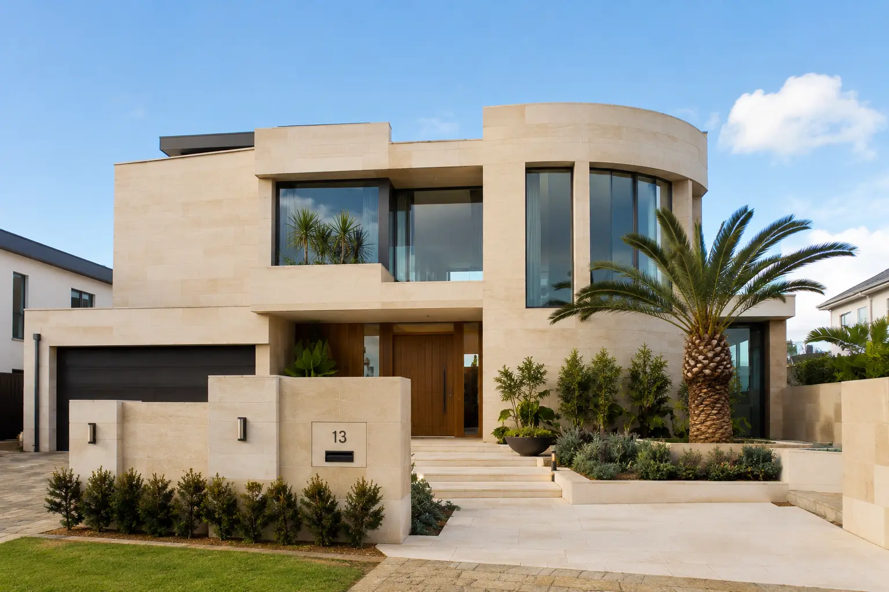
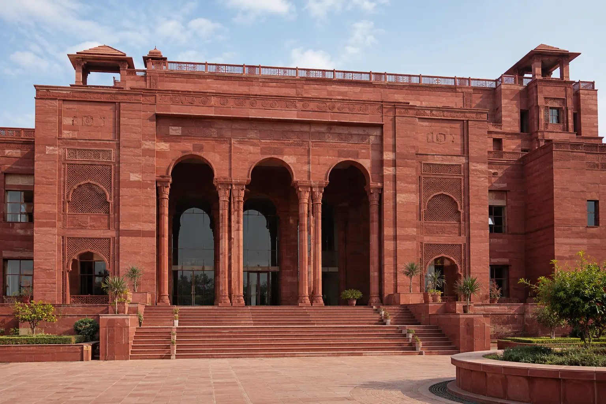
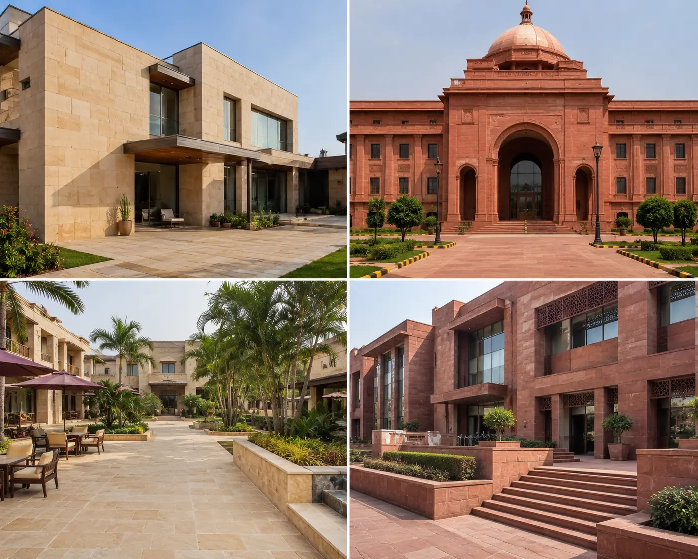
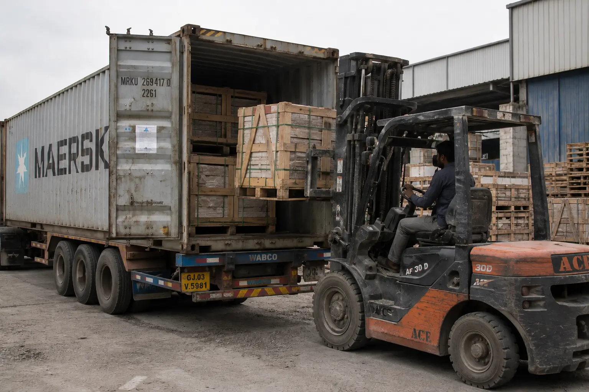
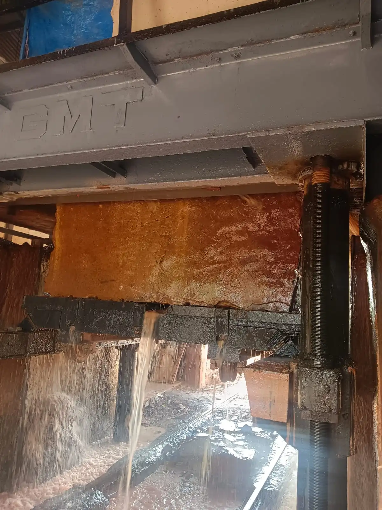

ANAY Premium Stone is a leading Dholpur Sandstone Manufacturer in Rajasthan, India, supplying premium Dholpur Beige Sandstone and Dholpur Red Sandstone for exporters, traders, wholesalers, architects, builders and international construction projects. Our sandstone products are widely used in luxury villas, commercial developments, hospitality projects, landscape architecture and public infrastructure worldwide.
Request a QuoteDholpur Sandstone is one of India's most recognized natural building stones, quarried in the Dholpur region of Rajasthan. Known for its durability, elegant appearance and architectural versatility, Dholpur Sandstone is widely specified for residential, commercial, hospitality and landscape projects across India and international markets.
The two most popular varieties are Dholpur Beige Sandstone and Dholpur Red Sandstone. Both stones are valued for their consistent quality, natural beauty and suitability for a wide range of architectural applications.
As a trusted Dholpur Sandstone Manufacturer, ANAY Premium Stone supplies premium sandstone products to exporters, traders, wholesalers, distributors, architects, builders and project developers worldwide.
Learn more about ANAY Premium Stone and our premium sandstone manufacturing capabilities in Rajasthan, India.

Dholpur Beige Sandstone is one of the most sought-after natural stones for premium residential and hospitality projects. Its warm beige colour, fine grain texture and timeless appearance make it a preferred choice for architects and designers seeking sophisticated natural stone solutions.
This sandstone is widely used for luxury villas, pool decks, outdoor living spaces, courtyards, wall cladding and architectural paving. The subtle colour variations and consistent texture help create elegant spaces that remain visually appealing for decades.
As a leading Dholpur Beige Sandstone Manufacturer, ANAY Premium Stone supplies high-quality sandstone products in slabs, tiles, paving stones, coping stones, wall cladding and custom architectural components.
The combination of durability, natural elegance and architectural flexibility makes Dholpur Beige Sandstone a preferred material for high-end construction projects worldwide.

Dholpur Red Sandstone is renowned for its rich terracotta-red colour, exceptional durability and timeless architectural appeal. This premium sandstone has been used in some of India's most iconic buildings and continues to be a preferred choice for monumental architecture, public spaces, commercial developments and luxury projects.
The natural colour variations, fine grain texture and strong structural characteristics make Dholpur Red Sandstone suitable for both traditional and contemporary architectural styles. Its bold appearance creates a powerful visual impact while maintaining the warmth and authenticity of natural stone.
As a trusted Dholpur Red Sandstone Manufacturer, ANAY Premium Stone supplies sandstone products in slabs, paving, wall cladding, steps, risers, kerbstones and custom architectural elements for projects worldwide.
Its distinctive colour and architectural character make Dholpur Red Sandstone one of India's most respected natural building materials.
Dholpur Sandstone has earned a strong reputation among architects, builders, exporters and project developers because of its durability, aesthetic appeal and versatility. It performs exceptionally well in both residential and commercial environments while offering the timeless beauty of natural stone.
Whether the requirement is for luxury villas, hotels, commercial developments or public infrastructure, Dholpur Sandstone delivers both performance and visual appeal.

Dholpur Sandstone is used across a wide range of architectural and construction projects due to its strength, natural beauty and adaptability. Both Dholpur Beige Sandstone and Dholpur Red Sandstone are widely specified by architects and developers seeking premium natural stone solutions.
From luxury residential developments to large-scale commercial projects, Dholpur Sandstone continues to be one of the most trusted natural building materials available from India.
The versatility of Dholpur Sandstone allows designers and builders to create sophisticated spaces while benefiting from the durability of natural stone.

Exporters, traders and wholesalers require more than high-quality stone products. They need a reliable manufacturing partner capable of delivering consistent quality, dependable production schedules and professional export support.
ANAY Premium Stone works closely with exporters, trading companies, distributors and procurement professionals seeking long-term sourcing solutions for Dholpur Sandstone. Our manufacturing capabilities support project-based production as well as ongoing bulk supply requirements.
Whether the requirement is for container quantities, wholesale distribution or project procurement, ANAY Premium Stone provides dependable manufacturing support and premium sandstone products.
Our team regularly supports sandstone exporters, traders, wholesalers, distributors and procurement companies looking for a trusted Dholpur Sandstone Manufacturer in Rajasthan, India.

At ANAY Premium Stone, every sandstone product undergoes a structured manufacturing process designed to ensure dimensional accuracy, consistent quality and reliable performance. From block selection to finished product preparation, quality control is maintained at every stage.
This manufacturing process enables us to supply premium Dholpur Beige Sandstone and Dholpur Red Sandstone for both domestic and international projects.
ANAY Premium Stone supplies premium Dholpur Sandstone products to a wide range of professionals and businesses seeking reliable manufacturing support and long-term sourcing partnerships.
A Dholpur Sandstone Manufacturer processes and supplies Dholpur Beige Sandstone and Dholpur Red Sandstone for construction, architecture, landscaping and export markets.
Dholpur Sandstone is used for villas, hotels, commercial projects, paving, wall cladding, landscaping, courtyards, pool decks and public infrastructure.
The most popular varieties are Dholpur Beige Sandstone and Dholpur Red Sandstone.
Yes. We support exporters, wholesalers, traders, distributors and project developers requiring bulk sandstone supply.
Yes. Exporters can source Dholpur Sandstone directly from ANAY Premium Stone.
Yes. All products are packed using professional export-grade packaging methods suitable for international shipping.
Yes. We manufacture sandstone products according to project specifications and custom dimensions.
Dholpur Sandstone is sourced from the Dholpur region of Rajasthan, India.
Yes. ANAY Premium Stone supplies Dholpur Beige Sandstone and Dholpur Red Sandstone to exporters, traders, wholesalers, builders and project developers throughout India.
Yes. We support projects in the UAE, UK, USA, Australia and other international markets.
You can contact ANAY Premium Stone with project details, quantities and specifications to receive a quotation.
Looking for a reliable Dholpur Sandstone Manufacturer? Contact ANAY Premium Stone for pricing, technical specifications, samples and project support.
Email: anaypremiumstone@gmail.com
Phone / WhatsApp: +91 7732865515
Location: Sarmathura, Dholpur, Rajasthan, India